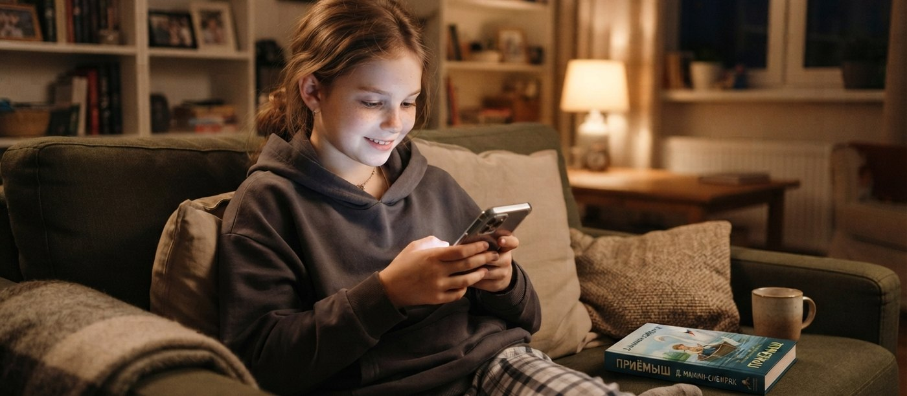
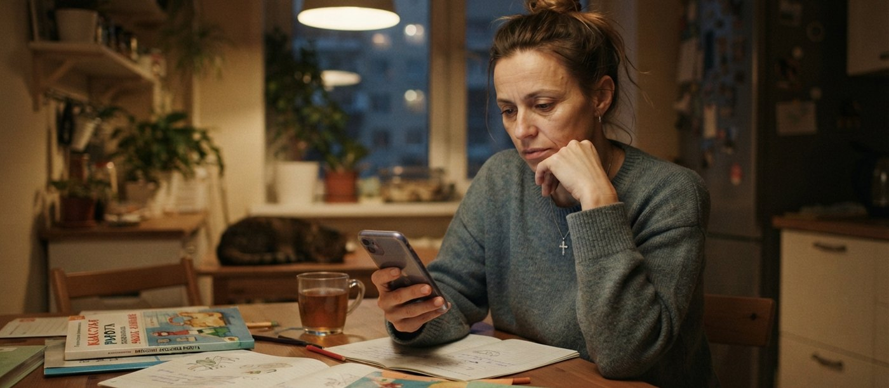
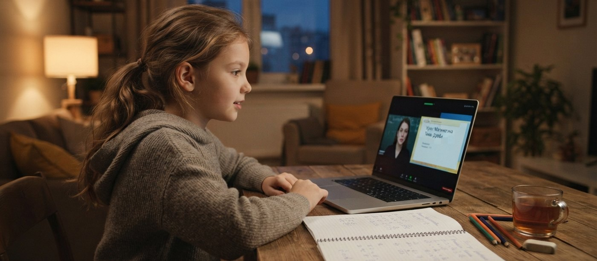

Я часто слышу от родителей формулировку «ребёнок совсем перестал читать» и сразу у них виноват телефон и игры. Но зачастую причина другая: чтение когда-то давалось тяжело, и ребёнок просто нашёл, чем его заменить. Ниже — история одной мамы из моей личной практики, я пересказываю её с разрешения, имена изменены. Свои пояснения поставила отдельными блоками.
Вечер, середина учебного года. Полина сидела над «Приёмышем» сорок минут и не ушла дальше второй страницы. Марина в третий раз спросила, о чём она читает. Дочь закрыла книгу.
— Я не хочу.
— Мы договаривались: двадцать минут.
— Мам, ну книги — это скучно.
— Потерпи, осталось немного.
— Я уже сорок минут сижу.
Марина посмотрела на часы: полвосьмого, сил ругаться с дочерью нет. Сказала «ладно, бери телефон» и ушла на кухню.

Первые недели дома стало тихо. Ежевечерний спор про двадцать минут просто исчез. Полина смотрела ролики, играла в игры, иногда включала пересказы книг из школьной программы, но сама книгу в руки больше не брала.
Марина объясняла это себе как многие: информацию дочь всё равно получает, просто в другом виде; сейчас так у всех; заставлять — значит окончательно потерять дочь.
Оценки по литературе держались на уровне 3 и 4, читательский дневник заполнялся. Вечера в доме стали тихими.
Проверку техники чтения в четвёртом классе Полина прошла с результатом 48 слов в минуту при норме от 90. Марина расстроилась, но решила, что дочь просто волновалась при учительнице.
Я почти не встречаю детей, которые бросили читать просто так. Сначала чтение перестаёт получаться, а рядом оказывается то, что усилий не требует. Ролик отдаёт ту же историю мгновенно, страница — через десять минут работы. При таком выборе ребёнок ведёт себя разумно, он экономит силы. Фраза «книги — это скучно» почти всегда означает «мне это тяжело», просто вслух так дети не говорят.
К зиме телефон стал основным источником всего. Полина знала, чем закончился «Дубровский», хотя проходить его будут только через два года. Могла пересказать сюжет любой книги из списка на лето.
Однажды Марина решила проверить.
— Про что «Приёмыш»?
— Про деда, который спас лебедя.
— А чем кончилось?
— Лебедь улетел.
— А почему дед плакал?
— Не помню. Там про это не было.
В книге дед плакал, и этим рассказ заканчивался. В четырёхминутном пересказе последнюю страницу пропустили.
Пересказ отдаёт сюжет. Чтение делает другую работу: ребёнок держит в голове несколько линий сразу, достраивает то, о чём прямо не сказано, возвращается назад и проверяет себя. Именно это потом нужно на текстовой задаче по математике, на параграфе по истории, на любом длинном тексте.
Ребёнок, который полгода получает готовые пересказы, знает сюжеты всех книг из списка. На технике чтения это не сказывается никак.
В апреле в классе была проверочная работа. Текст на полторы страницы и шесть вопросов к нему. Полина сдала бланк почти пустым. Учительница написала в комментарии: «не успела прочитать текст».
Дома Марина спросила, что случилось.
— Я читала. Просто там очень много букв.
— Ты не поняла?
— Я не дочитала.
Вечером Марина открыла настройки её телефона. Экранное время за неделю — тридцать четыре часа.
А потом посчитала другое. Осенью, до того как всё началось, Полина читала 48 слов в минуту. На весенней проверке вышло 42.
Марина забрала телефон на два дня. Был скандал, но читать дочь так и не начала — просто ходила по квартире и не знала, чем себя занять.
Сначала Марина попробовала договориться. Наклейки за прочитанные страницы, аквапарк за пять книг. На неделю телефон уехал в шкаф — Полина отсидела эту неделю и книгу так и не открыла.
Потом она написала в родительский чат. Не в классный, а в большое городское сообщество, где сидят мамы со всей школы и никто никого не знает лично. Там оказалось проще признаться, что дочь в четвёртом классе не читает совсем.
Ответы пришли разные — от «забрать гаджеты до восемнадцати» до «не мучайте ребёнка, сейчас другое поколение». Но четыре женщины написали почти одинаково: сначала техника, мотивация потом.
Двое из них, независимо друг от друга, посоветовали одно: бесплатный урок по скорочтению с диагностикой, куда идут вдвоём с ребёнком. Одна добавила в личке, что до этого урока была уверена в лени собственного сына.
Муж отнёсся скептически, но возражать не стал. Занятие онлайн, везти никого не надо, а до сентября оставалось три месяца: если не сработает, семья потеряет только несколько вечеров.
Записались в июне — на бесплатный урок с диагностикой.

Занятие заняло час. Полина села за компьютер, Марина устроилась сбоку, чтобы не мешать. Телефон дочь положила экраном вниз и первые минут десять всё равно на него косилась.
Начали с измерения: те же 42 слова в минуту. Потом педагог попросил пересказать прочитанное, и Полина назвала двух героев, а на вопросе, чем всё кончилось, запнулась. Дальше её посадили читать в камеру и считали, сколько раз глаза уходят обратно по строке. К концу часа у Марины был список:
Марина говорит, что за год это был первый разговор, после которого стало понятно, что происходит с дочерью. До того ей говорили только «не хочет читать».
Медленное чтение похоже на хромоту: заметно всем, а причина у каждого своя. Кому-то мешают глаза, которые всё время уходят назад по строке, кому-то — внимание, которое не держится дольше пары минут. Назначать упражнения, не зная причины, я не берусь.
И ещё одно, о чём родители обычно не думают. Если ребёнок переставляет буквы, читает «на» как «ан», а некоторые буквы пишет зеркально — это работа для логопеда. Выясняется на первой же диагностике, и честный педагог скажет об этом сразу.
Чуда за один вечер не случилось. Телефон Полина не разлюбила, занимаются они с июня, и до нормы своего класса она пока не дотягивает.
Изменилось то, что Марина понимает, над чем работать. Она знает, почему дочь не любит читать, и знает, какими упражнениями это чинят.
Первые сдвиги уже есть. Несколько недель назад Марина впервые за полгода увидела книгу в руках Полины. Дочь взяла её сама — сказала, что хочет узнать, чем закончится.

За двенадцать лет работы «совсем не читает» стало вторым по частоте запросом после «не хочет учиться». И почти всегда диагностика чтения показывает одно и то же: у ребёнка не получается.
Запреты тут работают плохо. Если убрать телефон, ребёнок не начнёт читать — он начнёт скучать. Возвращать интерес имеет смысл тогда, когда страница перестанет быть работой.
Марина до сих пор хранит ссылку на тот самый бесплатный урок — как возможность вернуться, если снова станет тревожно. Иногда достаточно просто знать, что у этой ситуации есть решение.
Проверить скорость и понимание у ребёнка можно на бесплатном уроке-диагностике школы скорочтения Матриус — 60 минут, для детей 5–15 лет.